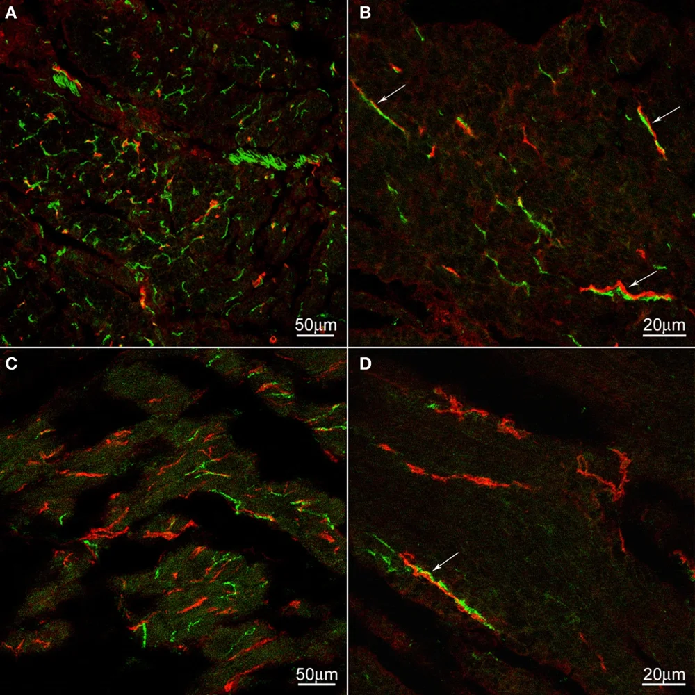
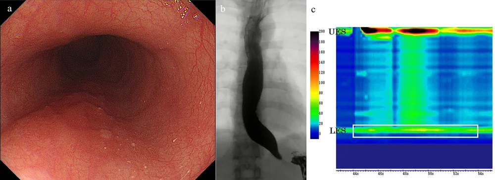

DX.7 — Achalasie
L'achalasie bloque le passage du bol à la jonction œsogastrique : la dysphagie touche les solides et les liquides, et le patient régurgite des aliments non digérésS1S2. Le médecin exclut d'abord un obstacle, surtout un cancer de la jonction, puis il confirme la maladie par la manométrie à haute résolutionS1.
1. Définition
La recommandation européenne de 2020, rédigée par United European Gastroenterology (UEG) et la European Society of Neurogastroenterology and Motility (ESNM), définit l'achalasieS1. Elle la décrit comme un trouble moteur primaire de l'œsophage qui associe une relaxation insuffisante du sphincter inférieur de l'œsophage (SIO) et une absence de péristaltismeS1. Ces deux anomalies provoquent la stase des aliments ingérés, d'où la dysphagie, les régurgitations, la douleur thoracique et l'amaigrissementS1. Dans la forme idiopathique, une cause inconnue, probablement inflammatoire, détruit les neurones entériques qui commandent le SIO et la musculature du corps œsophagienS1. La forme secondaire reproduit ce tableau lorsqu'une autre maladie atteint la fonction de l'œsophageS1.
2. Épidémiologie (Suisse, puis Europe)
L'achalasie est une maladie rare : l'Hôpital universitaire de Zurich (USZ) estime qu'environ une personne sur 100 000 la contracte chaque annéeS5. La recommandation européenne indique une incidence annuelle comprise entre 1,07 et 2,2 cas pour 100 000 habitantsS1. Elle indique une prévalence de 10 à 15,7 cas pour 100 000 habitants, car la maladie dure toute la vieS1. Le tableau suivant rassemble ces chiffres, et une fenêtre décrit le terrain et l'histoire naturelle.
| Chiffre | Population | Source et année |
|---|---|---|
| Environ 1 nouveau cas pour 100 000 personnes | Estimation d'experts reprise par l'USZ | USZ, mise à jour 2026 S5 |
| Incidence de 1,07 à 2,2 cas pour 100 000 habitants par an | Études européennes et internationales | UEG et ESNM, 2020 S1 |
| Prévalence de 10 à 15,7 cas pour 100 000 habitants | Études européennes et internationales | UEG et ESNM, 2020 S1 |
| Âge habituel de 25 à 60 ans, à parts égales entre les sexes | Patients suivis en Suisse | USZ, mise à jour 2026 S5 |
Qui est touché, et pourquoi
La maladie touche les deux sexes et tous les âges, selon la recommandation européenneS1. L'USZ la voit surtout entre 25 et 60 ans, chez autant de femmes que d'hommesS5. Le frère ou la sœur d'un patient ne court pas de risque accru, ce que le médecin peut annoncer à la familleS1.
L'USZ évoque une réaction immunitaire anormale, par exemple après une infection virale des voies respiratoires, qui détruirait les cellules nerveuses de l'œsophageS5. La maladie de Chagas, la chirurgie antireflux ou bariatrique, l'infiltration sarcoïdosique, les opioïdes et les cancers produisent des formes secondaires, que la recommandation européenne exclut de son champS1.
Histoire naturelle et complications
Sans traitement, l'œsophage se dilate progressivement pendant de nombreuses années, comme le montrent les séries citées par la recommandation européenneS1. Après une dilatation pneumatique, une stase persistante au transit minuté s'est accompagnée d'une dilatation supplémentaire de 0,5 cm en 2 ansS1. Le stade terminal associe un méga-œsophage tortueux, que la chirurgie traite mal et qui peut conduire à l'œsophagectomieS1.
Les aliments régurgités en position couchée peuvent être inhalés et provoquer une pneumonie, surtout la nuitS5S2. La stase favorise aussi l'œsophagite, la candidose œsophagienne, les saignements et les ulcères, d'après l'USZ et la recommandation européenneS5S1. Le risque relatif de carcinome épidermoïde atteint 72,65 et celui d'adénocarcinome 6,63, alors que le risque absolu reste faibleS1. La plupart de ces cancers surviennent plus de 10 ans après le début des symptômes, et une fenêtre en explique le mécanismeS1. La stase favorise enfin un diverticule épiphréniqueS2.
Pourquoi le cancer est plus fréquent
La vidange insuffisante favorise la prolifération bactérienne, l'irritation chimique et l'inflammation de la muqueuse, ce qui peut conduire à la dysplasie puis au carcinome épidermoïdeS1. Après traitement, la baisse de pression de la jonction expose à l'acide, ce qui peut produire un endobrachyœsophage et un adénocarcinomeS1. Le type de traitement ne modifie pas le risque de cancer, mais aucune donnée à long terme n'existe après myotomie endoscopique perorale (POEM)S1. Le risque semble plus élevé chez l'homme et dans la maladie de ChagasS1.
Les pratiques de dépistage diffèrent selon les régions, et la chromoendoscopie au lugol a donné un rendement faibleS1. Le rapport coût-efficacité du dépistage n'est pas démontré, car le risque absolu reste bas et les lésions précancéreuses sont difficiles à repérerS1.
Diverticule épiphrénique associé
Le diverticule épiphrénique est une hernie rare de la paroi à travers la musculeuse, juste au-dessus de la jonction, qui forme une pocheS2. Les études radiologiques ont trouvé une prévalence de 2,0 % en Europe, et les troubles moteurs comme l'achalasie en sont un facteur de risqueS2. Le médecin qui découvre un tel diverticule doit donc rechercher un trouble moteur sous-jacent par manométrieS2.
3. Physiopathologie
La maladie ne se comprend qu'après une base anatomo-fonctionnelle : la déglutition normale ouvre le SIO grâce à des neurones inhibiteurs, puis une onde péristaltique pousse le bol vers l'estomacS2. Dans l'achalasie, un processus inflammatoire détruit les neurones inhibiteurs producteurs de monoxyde d'azote dans l'œsophage distalS2. Leur perte au niveau du SIO augmente la pression de base et bloque la relaxation ; dans le muscle lisse distal, elle supprime le péristaltismeS2.
Le bol stagne donc au-dessus d'une jonction fermée : l'œsophage se remplit, se dilate, puis régurgite son contenuS1. La manométrie classe ensuite la maladie en trois sous-types, qui orientent le choix du traitementS1. Une tumeur peut imiter exactement ce mécanisme : c'est la pseudo-achalasie maligne, qu'il faut toujours chercherS1.
Base à connaître — la jonction œsogastrique et sa commande nerveuse
Nerfs nitrergiques de l'œsophage, normal contre achalasie
Cette immunofluorescence publiée marque en vert les fibres nerveuses à monoxyde d'azote (nNOS) et en rouge les cellules interstitielles de Cajal, chez un témoin (A, B) et chez un patient (C, D)S8.

Le lecteur doit d'abord comparer seul la densité des fibres vertes entre les panneaux du haut et ceux du bas.
La copie annotée porte quatre repères, qui opposent le témoin et le patient.
- Chez le témoin, les fibres nitrergiques vertes sont denses : ce sont elles qui relâchent le sphincter à chaque déglutitionS8.
- Chez le patient, les fibres vertes deviennent rares, ce qui explique une jonction qui ne se relâche plusS8.
- Chez le témoin, une fibre nerveuse longe une cellule de Cajal, qui relaie le signal vers le muscleS8.
- Chez le patient, ces contacts persistent parfois, alors que les cellules de Cajal gardent une densité normaleS8.
Ce que l'image décide. Le clinicien en déduit qu'aucun traitement ne restaure ces nerfs, et que tout geste vise seulement à ouvrir mécaniquement la jonctionS1.
Au repos, le SIO reste contracté et ferme l'estomac ; lors de la déglutition, les neurones inhibiteurs le relâchent, ce qui laisse passer le bolS2. Dans la partie distale, faite de muscle lisse, ces mêmes neurones coordonnent l'onde péristaltique qui propulse le bolS2. La perte des neurones inhibiteurs explique donc les deux anomalies de la maladie : une porte fermée et un tube inerteS2.
Le médecin en retient trois conséquences pratiques. D'abord, les liquides stagnent autant que les solides, car aucune onde ne les pousseS2. Ensuite, aucun traitement ne rend les neurones perdus : tous les gestes réduisent seulement la résistance de la jonctionS5S1. Enfin, l'endoscopie montre souvent une muqueuse normale, car la maladie touche les nerfs et non la muqueuseS1.
Les trois sous-types manométriques
La recommandation européenne reprend la classification de Chicago, qui définit trois sous-types par l'aspect des déglutitions en manométrieS1. Chaque sous-type exige une pression de relaxation intégrée (IRP) médiane supérieure au seuil, ce seuil dépendant du cathéter et variant de 15 à 28 mmHgS1.
| Sous-type | Critères manométriques | Conséquence pratique |
|---|---|---|
| Type I, classique | IRP médiane au-dessus du seuil et 100 % de déglutitions sans péristaltisme S1 | Le corps œsophagien est inerte et souvent dilaté. |
| Type II, pressurisation | IRP élevée, 100 % de déglutitions sans péristaltisme et au moins 20 % de pressurisations panœsophagiennes S1 | Ce type ne porte pas le mauvais pronostic thérapeutique du type III S1. |
| Type III, spastique | IRP élevée, aucun péristaltisme normal et au moins 20 % de contractions prématurées avec une intégrale contractile distale (DCI) supérieure à 450 S1 | Ce type répond moins bien au traitement, et la myotomie de Heller y fait mieux que la dilatation S1. |
Pseudo-achalasie maligne
La pseudo-achalasie maligne désigne un patient d'abord diagnostiqué, parfois traité, pour achalasie, chez qui on découvre ensuite un cancer responsableS1. Il peut s'agir d'un adénocarcinome du cardia à croissance sous-muqueuse, d'un cancer du pancréas localement avancé ou de métastases sous-muqueusesS1. Un carcinome à petites cellules du poumon peut aussi la produire par des anticorps anti-Hu, sans aucune masse au contact de l'œsophageS1.
Deux études cas-témoins ont relevé les mêmes indices : une courte durée des symptômes, un amaigrissement important et un âge plus élevéS1. La présence de deux facteurs ou plus augmente le risque de cancer, alors que moins de deux facteurs ne l'augmentent pasS1. Le cancer de l'œsophage est traité dans le DX.6 du LOT, auquel ce cours renvoie pour sa prise en charge.
Renvoi au cancer de l'œsophage
Le DX.6, cancer de l'œsophage, expose le bilan d'extension et le traitement de la tumeur, que ce cours ne reprend pas.
Le tableau suivant associe à chaque perturbation motrice l'examen qui la révèle et le geste qui la corrige.
| Perturbation | Exploration qui la montre | Thérapeutique et mécanisme |
|---|---|---|
| Relaxation insuffisante du SIO | IRP médiane au-dessus du seuil en manométrie S1 | Dilatation, myotomie de Heller ou myotomie endoscopique : chaque geste rompt les fibres du sphincter S1 |
| Absence de péristaltisme | Déglutitions sans onde propagée en manométrie S1 | Aucun traitement ne la corrige ; la gravité vide l'œsophage après l'ouverture de la jonction S5 |
| Stase et dilatation | Colonne de baryte persistante au transit minuté S1 | Le geste efficace normalise la vidange, qui devient un but du traitement S1 |
| Distensibilité réduite de la jonction | Planimétrie d'impédance (FLIP) S1 | Elle augmente après un traitement efficace S2 |
| Reflux après traitement | Endoscopie et pH-métrie de 24 heures S1 | Inhibiteur de la pompe à protons (IPP) en première ligne S1 |
4. Démarche diagnostique
Ce diagnostic ne porte aucun rang d'urgence dans la Phase A, mais trois situations graves passent avant lui. Un blocage aigu, avec impossibilité d'avaler la salive, évoque une impaction alimentaire, qui impose une endoscopie rapideS2. Une dysphagie récente avec amaigrissement oriente vers un cancer, c'est-à-dire une pseudo-achalasieS1. Une douleur rétrosternale, que les patients prennent souvent pour une maladie cardiaque, exige d'écarter d'abord une cause cardiaqueS5.
Impaction alimentaire : renvoi
L'impossibilité aiguë d'avaler suggère une impaction alimentaire dans l'œsophage, et UEG et ESNM indiquent que l'endoscopie y est centraleS2. Le DX.3, impaction alimentaire œsophagienne, précise la conduite d'urgence.
Les causes fréquentes viennent ensuite, et le tableau donne pour chacune l'élément qui la sépare de l'achalasie.
| Diagnostic | Élément qui tranche | Piège | Conduite si positif |
|---|---|---|---|
| 🚩 Pseudo-achalasie maligne | Âge supérieur à 55 ans, symptômes depuis moins de 12 mois, perte de plus de 10 kg, passage difficile de l'endoscope S1 | La manométrie est identique à celle de l'achalasie S1 | Tomodensitométrie (TDM) ou échoendoscopie S1 |
| Sténose peptique ou œsophagite à éosinophiles | Dysphagie aux seuls solides, lésion visible à l'endoscopie S2 | Un IPP soulage le reflux mais pas l'achalasie | Biopsies et traitement de la cause |
| Obstruction de la jonction œsogastrique (EGJOO) | IRP élevée avec péristaltisme conservé S2 | Les opioïdes, une hernie hiatale ou une infiltration la provoquent S2 | Transit minuté ou FLIP avant tout geste S2 |
| Spasme œsophagien distal | Péristaltisme présent mais prématuré, IRP normale | Une achalasie de type III lui ressemble S1 | Manométrie de contrôle spécialisée |
5. Anamnèse ciblée et drapeaux rouges
L'anamnèse sépare d'abord une dysphagie oropharyngée d'une dysphagie œsophagienne, puis un obstacle d'un trouble moteurS2. Quatre questions séparent ces deux étages avec une exactitude de 80 % : délai de déclenchement, reflux nasal, toux à la déglutition et déglutitions répétéesS2. Le patient localise mal sa gêne, car l'achalasie peut produire une sensation au creux sus-sternal, comme une dysphagie hauteS2.
Chaque symptôme se caractérise ensuite dans sa fenêtre : la dysphagie, la régurgitation, la douleur thoracique, l'amaigrissement, la toux nocturne et le pyrosis. Le médecin recherche aussi les causes secondaires avant de conclure à une forme primaire.
Symptôme 1 — Dysphagie
Siège et type. La gêne est rétrosternale ou sus-sternale et touche les solides et les liquides, ce qui oriente vers un trouble moteur plutôt que vers un obstacleS2S5.
Horaire et évolution. Les symptômes débutent souvent discrètement et s'aggravent, d'abord pour les solides puis pour les liquides, selon l'USZS5. Une dysphagie progressive oriente vers un obstacle, alors qu'une dysphagie intermittente oriente vers un trouble moteurS2.
Facteurs qui soulagent. Le patient boit beaucoup pendant le repas pour faire descendre les aliments, ce qui traduit le rôle de la gravitéS5.
Typique ou non. La dysphagie mixte est typique, car aucune onde ne pousse le bol ; une dysphagie aux seuls solides, rapidement progressive, est atypique et oriente vers un obstacleS2.
Symptôme 2 — Régurgitation
Caractère. Le patient régurgite des aliments non digérés, sans goût acide, parfois plusieurs heures après le repas, car ils n'ont jamais atteint l'estomacS5S1.
Horaire et déclencheurs. La régurgitation survient surtout en position couchée et la nuit, ce qui la rend dangereuse par risque d'inhalationS5.
Typique ou non. Elle est typique ; une régurgitation acide qui cède à un IPP oriente plutôt vers un reflux gastro-œsophagien.
Symptôme 3 — Douleur thoracique
Fréquence et horaire. Jusqu'à 64 % des patients décrivent une douleur thoracique, qui survient la nuit chez 47 % d'entre euxS1. Elle dure de quelques minutes à près de 24 heuresS1.
Mécanisme. La distension par une vidange incomplète, les contractions spastiques, le reflux et l'hypersensibilité viscérale peuvent l'expliquerS1.
Typique ou non. Elle est fréquente mais trompeuse, car le patient l'attribue souvent au cœurS5. Sa présence prédit une moins bonne réponse à la dilatation et à la myotomieS1.
Symptôme 4 — Amaigrissement
Mécanisme. L'apport diminue parce que le patient mange moins et plus lentement pour éviter le blocage et la régurgitationS5.
Seuil d'alerte. Une perte de plus de 10 kg, surtout avec des symptômes depuis moins de 12 mois, fait suspecter une pseudo-achalasie maligneS1.
Typique ou non. Une perte modérée et lente est typique ; une perte massive et rapide est atypique et impose la recherche d'un cancerS1.
Symptôme 5 — Toux nocturne et infections respiratoires
Mécanisme. Le contenu stagnant reflue vers le pharynx en décubitus et passe dans les voies aériennes, ce qui provoque une toux chroniqueS2.
Conséquence. L'aspiration répétée expose à la pneumonie, particulièrement dans l'achalasie avancéeS2S5.
Typique ou non. Elle est fréquente au stade avancé et constitue un signe de gravité, car elle traduit une stase importanteS2.
Symptôme 6 — Pyrosis
Mécanisme. Avant tout traitement, la brûlure provient souvent de la fermentation des aliments stagnants, que l'on distingue mal d'un reflux acideS1.
Piège. Le pyrosis fait poser à tort un diagnostic de reflux, et l'achalasie reste alors méconnue sous IPP ; une dysphagie mixte doit faire demander une endoscopieS1S2.
Après traitement. Un pyrosis nouveau après une myotomie évoque au contraire un vrai reflux, plus fréquent après la myotomie endoscopiqueS1.
Causes secondaires à rechercher
Le médecin demande les antécédents de fundoplicature ou de chirurgie bariatrique, car ces interventions peuvent produire une achalasie secondaireS1. Il recherche une prise d'opioïdes, qui altère la relaxation du SIO et la séquence péristaltiqueS2. Il demande un séjour en Amérique latine, car la maladie de Chagas cause une forme secondaireS1.
Les drapeaux rouges imposent une action immédiate, que le tableau précise.
| Drapeau rouge | Signification | Action immédiate |
|---|---|---|
| 🚩 Impossibilité d'avaler la salive | Impaction alimentaire S2 | Endoscopie rapide (voir DX.3) |
| 🚩 Perte de plus de 10 kg, début depuis moins de 12 mois, âge supérieur à 55 ans | Pseudo-achalasie maligne S1 | Endoscopie, puis TDM ou échoendoscopie S1 |
| 🚩 Fièvre, toux et dyspnée | Pneumonie d'aspiration S2 | Radiographie du thorax et traitement de la pneumonie |
| 🚩 Douleur, fièvre ou emphysème après dilatation ou myotomie | Perforation S4 | TDM en urgence S4 |
6. Examen physique ciblé, région par région
L'examen reste souvent normal, car la maladie siège dans le médiastin ; il mesure surtout ses conséquences et cherche une autre causeS1. Il suit l'ordre du geste : état général et poids, bouche et cou, thorax et poumons, cœur, puis abdomen et ganglions.
Région 1 — État général, poids et hydratation
Signe. Le médecin cherche une dénutrition et une déshydratation, car la stase réduit les apports ; une perte de plus de 10 kg fait suspecter un cancerS1.
Geste. Il pèse le patient, calcule l'indice de masse corporelle et compare ce poids à celui d'avant les symptômes.
Aspect. La fonte musculaire des tempes et des membres signe une dénutrition avancée, qui alourdit le risque de tout geste.
Région 2 — Bouche, pharynx et cou
Signe. Le médecin cherche des signes d'une dysphagie oropharyngée, car un trouble haut peut coexister avec l'achalasieS2.
Geste. Il fait boire quelques gorgées d'eau en observant le déclenchement, la toux et le reflux nasal, qui signent une atteinte oropharyngéeS2.
Aspect. Dans l'achalasie, la déglutition se déclenche normalement, puis le patient décrit un arrêt plus bas, ce qui sépare les deux étagesS2.
Région 3 — Thorax et poumons
Signe. Le médecin cherche des crépitants localisés et une fièvre, qui témoignent d'une pneumonie d'aspirationS2.
Geste. Il ausculte les deux bases en avant et en arrière, car l'inhalation nocturne atteint volontiers les segments déclives.
Aspect. Un emphysème sous-cutané crépitant au cou après une dilatation fait suspecter une perforation et impose une TDMS4.
Région 4 — Cœur
Signe. Le médecin évalue le cœur, car le patient prend souvent sa douleur rétrosternale pour une maladie cardiaqueS5.
Geste. Il mesure le pouls et la tension, ausculte, puis demande un électrocardiogramme devant une douleur thoracique récente.
Aspect. Un examen cardiaque normal ne prouve pas l'origine œsophagienne ; seul le bilan œsophagien la confirmeS1.
Région 5 — Abdomen et aires ganglionnaires
Signe. Le médecin cherche une masse épigastrique, une hépatomégalie ou une adénopathie, car un cancer du cardia ou du pancréas peut produire une pseudo-achalasieS1.
Geste. Il palpe l'épigastre, le foie et les creux sus-claviculaires, surtout chez le patient de plus de 55 ansS1.
Aspect. Un examen normal n'exclut pas une tumeur sous-muqueuse, ce qui justifie la place de l'endoscopie et de l'imagerieS1.
7. Approche syndromique
Quatre syndromes résument le tableau, et le tableau suivant les éclate en signes fonctionnels et physiques.
| Syndrome | Signes fonctionnels | Signes physiques |
|---|---|---|
| 7.1 Obstruction fonctionnelle de la jonction | Dysphagie aux solides et aux liquides, régurgitation d'aliments non digérés S1 | Aucun signe propre ; l'examen reste normal |
| 7.2 Stase et aspiration | Toux nocturne, pneumonies répétées S2 | Crépitants des bases, fièvre |
| 7.3 Douleur thoracique œsophagienne | Douleur rétrosternale, souvent nocturne S1 | Examen cardiaque normal |
| 7.4 Dénutrition | Repas lents, apports réduits, perte de poids S5 | Baisse de l'indice de masse corporelle, fonte musculaire |
Chaque signe a une définition et un mécanisme : la stase, la fausse route tardive et la douleur spastique sont détaillées en fenêtre.
Signe — Stase œsophagienne
Définition. La stase correspond à la persistance d'aliments, de liquide ou de salive dans l'œsophage à distance du repasS1.
Recherche. Le transit minuté la mesure par la hauteur de la colonne de baryte à 1, 2 et 5 minutesS1. L'endoscopie la montre par la salive et les aliments retenus dans un œsophage dilatéS1.
Mécanisme. Une jonction fermée et un corps sans péristaltisme laissent la gravité seule vider l'œsophageS2.
Signe — Fausse route tardive
Définition. La fausse route tardive survient à distance du repas, souvent en décubitus, lorsque le contenu stagnant remonte vers le larynxS2.
Recherche. Le médecin demande une toux nocturne, des réveils avec étouffement et des oreillers souillés, puis il ausculte les bases.
Mécanisme. Elle diffère de la fausse route immédiate de l'atteinte oropharyngée, car la déglutition elle-même reste normaleS2.
Signe — Douleur spastique
Définition. La douleur spastique est une douleur rétrosternale constrictive, liée à des contractions prématurées du corps œsophagienS1.
Recherche. La manométrie la relie à des contractions prématurées, qui définissent le type IIIS1.
Mécanisme. La contraction non coordonnée se heurte à une jonction fermée, ce qui accroît la pression dans la lumière.
8. Diagnostic positif et critères
La recommandation européenne de 2020 fonde le diagnostic sur la manométrie à haute résolution, après une endoscopie qui exclut un obstacleS1. Le diagnostic exige une IRP médiane au-dessus du seuil du cathéter et l'absence de péristaltisme normalS1. Le tableau précise ce qui suffit et ce qui ne suffit pas.
| Élément | Valeur pour le diagnostic |
|---|---|
| IRP médiane au-dessus du seuil, de 15 à 28 mmHg selon le cathéter, et péristaltisme absent | Suffit, si l'endoscopie a exclu un obstacle S1 |
| Endoscopie évocatrice (dilatation, stase, résistance du cardia) | Ne suffit pas : elle n'oriente que dans 30 à 50 % des cas S1 |
| Transit baryté en bec d'oiseau | Ne suffit pas seul, mais sert quand la manométrie manque S1 |
| Distensibilité réduite à la planimétrie | Ne suffit pas seule ; elle complète un bilan douteux S1 |
| IRP élevée avec péristaltisme conservé | Ne suffit pas : elle définit une EGJOO, à confirmer par d'autres tests S2 |
Le score d'Eckardt ne pose pas le diagnostic ; il mesure les symptômes et sert à juger l'échec du traitementS1.
Score d'Eckardt
Le score d'Eckardt additionne la gravité de la dysphagie, des régurgitations, de la douleur thoracique et de l'amaigrissementS1. La plupart des essais retiennent un score supérieur à 3, ou une amélioration inférieure à 50 %, comme un échec du traitementS1. Ce score ne distingue pas la dysphagie des autres symptômes gênants, ce qui en limite la portéeS1.
9. Examens complémentaires
9.a — Gold standard. La manométrie à haute résolution est l'examen de référence, que la recommandation européenne recommande fortement chez l'adulte suspect d'achalasieS1. L'USZ indique qu'elle est l'examen le plus important pour poser le diagnosticS5.
9.b — Première intention. L'endoscopie haute vient d'abord, car UEG et ESNM la recommandent chez tout adulte qui présente une dysphagie œsophagienneS2. Elle exclut un cancer et une œsophagite, même si elle confirme rarement l'achalasieS1.
9.c — Alternatives. Si la manométrie manque, le transit œsophagien minuté la remplace, car il mesure la vidangeS1. Si la manométrie est douteuse, la planimétrie d'impédance évalue la distensibilité de la jonctionS2. La recommandation européenne ne traite que l'adulte : chez l'enfant, le bilan relève d'un centre pédiatrique spécialiséS1.
9.d — Deuxième intention. Une TDM thoraco-abdominale ou une échoendoscopie cherche un cancer lorsque les facteurs de risque de pseudo-achalasie sont présentsS1. La biologie mesure enfin la dénutrition et prépare le geste.
Examen — Manométrie à haute résolution
Indication. Le médecin la prescrit devant une dysphagie œsophagienne sans obstacle à l'endoscopieS2.
Prescription. La demande précise « dysphagie mixte, endoscopie sans obstacle, suspicion d'achalasie : manométrie haute résolution selon Chicago » et joint le compte rendu endoscopique.
Technique. Une sonde nasale porte de nombreux capteurs de pression ; le patient avale de petits volumes d'eau, puis des tests de provocation complètent l'examenS2. Les déglutitions rapides multiples évaluent la réserve contractile, et le test de boisson rapide augmente la sensibilité pour l'EGJOOS2.
Interprétation. Une IRP médiane au-dessus du seuil, de 15 à 28 mmHg selon le cathéter, avec 100 % de déglutitions sans péristaltisme, signe l'achalasieS1. Le profil des déglutitions indique ensuite le sous-type I, II ou IIIS1.
Pièges. Une IRP élevée avec un péristaltisme conservé ne signe pas l'achalasie, mais une EGJOO souvent artificielle ou peu symptomatiqueS2. Une IRP normale n'exclut pas tout à fait la maladie, d'où la place de la planimétrie dans ce casS1.
Examen — Endoscopie haute (œsogastroduodénoscopie)
Indication. Elle s'impose chez tout adulte qui présente une dysphagie œsophagienne, et en urgence lorsqu'il ne peut plus avalerS2.
Ce qu'elle cherche. Le médecin examine soigneusement la jonction et le cardia en rétrovision pour exclure un cancerS1.
Aspect évocateur. Au stade avancé, elle montre un œsophage dilaté et tortueux, avec de la salive et des aliments retenusS1. Une résistance franche au passage du cardia doit faire penser à une pseudo-achalasieS1.
Pièges. Au début, l'endoscopie est souvent normale, et elle n'oriente que dans 30 à 50 % des casS1. La stase expose à l'inhalation lors de la sédation, ce qui impose une préparation adaptée avant le geste.
Examen — Transit œsophagien baryté minuté
Technique. Le patient boit 100 à 200 mL de baryte à faible densité, puis on prend des clichés à 0, 1, 2 et 5 minutes en position oblique postérieure gaucheS1.
Mesure. On mesure la hauteur et la largeur de la colonne de baryte, depuis la jonction jusqu'à l'interface entre baryte et mousseS1.
Interprétation. Une hauteur supérieure à 5 cm à 1 minute et supérieure à 2 cm à 5 minutes oriente vers l'achalasieS1. Le seuil de 2 cm à 5 minutes atteint une sensibilité de 85 % et une spécificité de 86 %S2.
Aspect. Le cliché montre un œsophage dilaté qui se termine en bec d'oiseau, avec une jonction qui s'ouvre malS2. Au stade avancé, l'USZ indique que cet aspect ressemble à une coupe de champagneS5.
Pièges. Le transit simple n'atteint que 58 à 75 % de sensibilité, alors que sa valeur prédictive positive atteint 96 %S1. Il ne doit jamais retarder la prise en charge d'une impaction complète.
Endoscopie, transit baryté et manométrie d'une achalasie de type II
Cette figure publiée réunit les trois examens d'un même patient : endoscopie (a), œsophagogramme (b) et manométrie à haute résolution (c)S9.

Le lecteur doit d'abord chercher seul la jonction fermée sur chacun des trois clichés.
La copie annotée porte six repères, deux par examen.
- L'endoscopie montre un œsophage non dilaté, mais l'endoscope rencontre une résistance accrue à la jonctionS9.
- Le transit garde de la baryte dans un œsophage encore peu dilaté, ce qui signe la staseS9.
- L'extrémité inférieure s'effile en bec d'oiseau, image de la jonction qui ne s'ouvre pasS9S2.
- Le sphincter supérieur se relâche normalement en haut du tracé, ce qui marque le début de la déglutitionS9.
- La bande verte qui couvre tout l'œsophage traduit une pressurisation panœsophagienne, propre au type IIS9S1.
- Le cadre blanc mesure une IRP élevée à 43,3 mmHg au niveau du sphincter inférieurS9.
Ce que l'image décide. La manométrie confirme et classe la maladie, ce qui ouvre le choix du traitement décrit au point 11S1.
Examen — Planimétrie d'impédance (FLIP)
Principe. Un ballon placé dans la jonction mesure sa section et la pression, ce qui donne un indice de distensibilitéS1.
Interprétation. À 40 mL de distension, l'indice reste inférieur à 1,6 mm²/mmHg chez les patients et supérieur à 2,7 mm²/mmHg chez les témoinsS1. UEG et ESNM retiennent qu'un indice typiquement inférieur à 2 mm²/mmHg accompagne l'achalasieS2.
Pièges. L'examen exige une sédation et ne décrit pas le péristaltisme comme la manométrie, d'où l'interdiction de poser le diagnostic sur lui seulS1.
Examen — TDM et échoendoscopie
Indication. La recommandation européenne limite ces examens aux patients suspects de pseudo-achalasie maligne, et non à tous les patientsS1.
Ce qu'ils montrent. La TDM cherche une tumeur du cardia, du pancréas ou du poumon, et l'échoendoscopie examine la paroi de la jonctionS2.
Pièges. Des biopsies superficielles normales n'excluent pas une tumeur sous-muqueuse, car celle-ci respecte la muqueuseS1.
Examen — Biologie avant le geste
Indication. Le médecin évalue l'état nutritionnel et la tolérance du geste chez le patient amaigri.
Prescription. Il demande une formule sanguine, une créatinine, des électrolytes et une albumine, puis une hémostase si un traitement anticoagulant est en cours.
Pièges. Aucune analyse sanguine ne pose le diagnostic d'achalasie, qui reste manométriqueS1.
Le tableau d'interprétation résume la conduite.
| Résultat | Signification | Conduite |
|---|---|---|
| IRP au-dessus du seuil et péristaltisme absent | Achalasie S1 | Classer le sous-type, puis discuter du traitement |
| IRP élevée et péristaltisme conservé | EGJOO S2 | Transit minuté ou FLIP, puis rechercher une cause |
| Colonne de baryte supérieure à 2 cm à 5 minutes | Vidange altérée S1 | Confirmer par manométrie, ou juger l'échec d'un traitement |
| Résistance du cardia et facteurs de risque | Suspicion de pseudo-achalasie S1 | TDM ou échoendoscopie |
10. Arbre décisionnel
L'arbre suivant se lit de haut en bas, les situations graves d'abord.
- Si le patient ne peut plus avaler sa salive, alors il s'agit d'une impaction, et l'endoscopie urgente passe avant tout bilan moteurS2.
- Si la dysphagie est œsophagienne, alors une endoscopie haute exclut un obstacle et un cancerS2.
- Si un obstacle ou une œsophagite apparaît, alors on traite cette cause.
- Si la muqueuse est normale ou montre une stase, alors on demande la manométrie à haute résolutionS1.
- Si la manométrie montre une IRP élevée sans péristaltisme, alors l'achalasie est confirmée et classéeS1.
- Si la manométrie est douteuse, alors un transit minuté ou une planimétrie complète le bilanS2.
- Si la dysphagie revient après traitement, alors on refait un transit minuté, avec ou sans manométrie, avant tout nouveau gesteS1.
11. Prise en charge selon les recommandations suisses
11.A — But. Le premier but est le soulagement des symptômes, et la recommandation européenne y ajoute l'amélioration de la vidange mesurée au transit barytéS1. Un score d'Eckardt de 3 ou moins définit le succès dans la plupart des essaisS1. Le patient doit savoir que le traitement ne guérit pas la maladie, mais qu'il améliore les symptômesS1S5.
11.B — Moyens. Les complications aiguës suivent une conduite chronologique d'urgence. Hors urgence, trois gestes ont une efficacité comparable : la dilatation pneumatique graduée, la myotomie endoscopique perorale (POEM) et la myotomie de Heller laparoscopiqueS1. La décision tient compte du patient, de ses préférences, des complications possibles et de l'expérience du centreS1.
Urgence — conduite chronologique
Minutes. Devant une impossibilité d'avaler la salive, le médecin organise une endoscopie rapide et met le patient à jeun, car il s'agit d'une impactionS2.
Minutes. Devant une douleur, une fièvre ou un emphysème après dilatation ou myotomie, il suspecte une perforation et demande une TDM sans tarderS4. L'endoscopiste insuffle alors du dioxyde de carbone, puis il envisage une fermeture endoscopiqueS4.
Heures. Si la fermeture échoue ou si l'état du patient se dégrade, la Société européenne d'endoscopie gastro-intestinale (ESGE) recommande l'hospitalisation et l'avis chirurgicalS4.
Heures à jours. Une pneumonie d'aspiration impose une radiographie du thorax et un traitement de la pneumonie, puis la correction de la stase qui l'a causéeS2.
À prévoir. Le centre doit disposer d'une procédure écrite contre les perforations, partagée avec les radiologues et les chirurgiensS4.
Dilatation pneumatique graduée
Protocole. L'ESGE recommande de commencer par un ballon de 30 mm, puis de passer à 35 mm après 2 à 4 semainesS3. Un ballon de 40 mm suit si le soulagement reste insuffisant, plutôt qu'un gros ballon d'embléeS3.
Pourquoi graduée. Le risque de perforation impose de commencer à 30 mm chez un patient jamais traité, et une seconde séance à 35 mm retarde la récidiveS1.
Efficacité. Une seule série de dilatations fait moins bien que la myotomie, mais des dilatations répétées à la récidive approchent son efficacitéS1. Les patients de plus de 45 ans répondent mieux à la dilatation que les plus jeunesS1.
Myotomie endoscopique perorale (POEM)
Principe. L'endoscopiste ouvre un tunnel sous la muqueuse, puis il sectionne les fibres musculaires de la jonction, sans incision cutanéeS1.
Efficacité. Dans un essai multicentrique, le succès à 2 ans était plus fréquent après POEM qu'après dilatationS1. L'échec clinique a touché 8 % des patients traités par POEM après 2 ansS1.
Limite. Le reflux survient plus souvent après POEM qu'après chirurgie ou dilatation, même si l'œsophagite sévère reste rareS1. Un patient à haut risque de reflux qui refuse un IPP peut préférer la chirurgie ou la dilatationS1.
Douleur. Des séries de cas suggèrent que la POEM soulage la douleur thoracique des troubles hypercontractiles, mais aucune n'était contrôlée contre placeboS1.
Myotomie de Heller laparoscopique
Principe. Le chirurgien sectionne les couches musculaires du SIO et du cardia, puis il ajoute une fundoplicature partielle contre le refluxS1.
Piège. Une fundoplicature complète à 360 degrés est à éviter, car elle aggraverait la dysphagie au lieu de la soulagerS1.
Efficacité. La récidive des symptômes touche 10 à 20 % des patients à long termeS1. La chirurgie a fait mieux que la dilatation dans le type III, selon une analyse de l'essai européenS1.
La toxine botulique injectée dans le SIO peut soulager à court termeS1. La recommandation européenne la réserve aux patients inaptes à un geste invasif, ou dont le traitement doit être différéS1. Les inhibiteurs calciques, les inhibiteurs de la phosphodiestérase et les dérivés nitrés sont déconseillés, car aucun bénéfice n'est démontré et leurs effets indésirables sont réelsS1. Ils ne doivent jamais retarder un traitement efficaceS1. Les prothèses œsophagiennes et les injections sclérosantes sont également déconseilléesS1.
Toxine botulique de type A — BOTOX® (n° 52433)
| Rubrique | Contenu de l'information professionnelle suisse (AIPS) |
|---|---|
| Indication | L'AIPS ne mentionne pas l'achalasie : l'injection dans l'œsophage reste une indication non autorisée S7 |
| Dose AIPS | L'AIPS ne fixe aucune dose pour l'œsophage ; la dose initiale doit être la plus faible recommandée pour l'indication S7 |
| Contre-indications | Hypersensibilité à la toxine ou à un excipient, et infection au site d'injection S7 |
| Grossesse et allaitement | Grossesse : « BOTOX ne doit pas être utilisé pendant la grossesse ou chez des femmes en âge de procréer qui n'utilisent pas de méthode de contraception, sauf en cas de nécessité absolue » ; allaitement : « L'utilisation de BOTOX pendant l'allaitement ne peut pas être recommandée. » S7 |
| Mise en garde majeure | Des effets graves, parfois mortels, ont été rapportés après injection dans l'œsophage, surtout chez des patients déjà dysphagiques ou affaiblis S7 |
La toxine réduit la pression du SIO, la stase et les symptômes à court terme, mais les symptômes reviennent avec le tempsS1. La dilatation et la chirurgie font mieux qu'elle au-delà de six mois, ce qui explique sa place restreinteS1. La diffusion à distance peut provoquer une dysphagie, une pneumonie ou une faiblesse respiratoire, plusieurs heures à plusieurs semaines après l'injectionS7.
Le tableau des médicaments résume les deux molécules utiles, chacune détaillée dans sa fiche.
| Molécule ® | Dose AIPS | Voie et durée | Contre-indication majeure | Extrait AIPS |
|---|---|---|---|---|
| Pantoprazole, Pantozol® (n° 52710) | Chez l'adulte, 40 mg par jour pour l'œsophagite, 20 mg en entretien S6 | Orale, 4 à 8 semaines, puis au long cours | Hypersensibilité aux benzimidazoles S6 | Guérison le plus souvent en 4 semaines S6 |
| Toxine botulique A, BOTOX® (n° 52433) | Aucune dose AIPS pour l'œsophage S7 | Injection endoscopique dans le SIO, effet temporaire | Infection au site d'injection S7 | Effets graves rapportés après injection œsophagienne S7 |
Situations spéciales. Chez le sujet jeune, la dilatation donne de moins bons résultats, ce qui oriente vers une myotomieS1. Chez le sujet âgé fragile, la toxine botulique reste une option temporaireS1S5. Pendant la grossesse, l'AIPS de BOTOX® interdit son usage sauf nécessité absolueS7. Le régime suit les conseils d'UEG et ESNM : repas petits, fréquents et énergétiques, sans repas tardif, avec position assise 30 à 60 minutes aprèsS2.
Volet social et assurances. Les gestes se décident en centre expérimenté, car l'expertise locale fait partie du choix recommandéS1. L'information du patient comprend la rareté de la maladie, l'absence de risque familial, le reflux possible et le faible surcroît de risque de cancerS1.
11.C — Surveillance. Une dysphagie récidivante ou persistante impose un transit minuté, avec ou sans manométrie, et une endoscopie doit être envisagéeS1. Après une myotomie sans geste antireflux, une endoscopie de contrôle recherche un refluxS1. Le pantoprazole et les autres IPP traitent ce reflux en première ligneS1. Un IPP à vie est recommandé si l'œsophagite dépasse le grade A de Los AngelesS1.
Pantoprazole — Pantozol® (n° 52710)
| Rubrique | Contenu de l'AIPS |
|---|---|
| Indication | Œsophagite par reflux légère à moyennement grave, et traitement au long cours avec prévention des récidives après guérison S6 |
| Dose AIPS | Chez l'adulte, 40 mg une fois par jour pour l'œsophagite ; guérison le plus souvent en 4 semaines, sinon 4 semaines de plus S6 |
| Dose d'entretien | Chez l'adulte, 20 mg par jour au long cours, portés à 40 mg en cas de récidive S6 |
| Contre-indication | Hypersensibilité au pantoprazole ou aux benzimidazoles substitués S6 |
| Grossesse et allaitement | Grossesse : « Pantozol ne doit pas être administré pendant la grossesse sauf en cas d'absolue nécessité. » ; allaitement : « la décision relative à l'interruption ou à la poursuite de l'allaitement ou du traitement par Pantozol doit s'appuyer sur une mise en balance du bénéfice de l'allaitement pour l'enfant et du bénéfice du traitement par Pantozol pour la mère. » S6 |
| Situations particulières | Insuffisance hépatique sévère : 20 mg par jour au plus ; sujet âgé ou insuffisant rénal : 40 mg par jour au plus S6 |
Le comprimé s'avale entier avec un peu d'eau, une heure avant un repas, ce qui compte chez un patient dont l'œsophage se vide malS6. Un traitement de plus de trois mois expose à une hypomagnésémie, et un traitement prolongé à forte dose augmente légèrement le risque de fracturesS6. L'association avec l'atazanavir n'est pas recommandée, car elle réduit nettement son absorptionS6.
Récidive de la dysphagie après traitement
La dysphagie persistante traduit souvent un traitement incomplet, alors qu'une récidive après une amélioration relève de causes variéesS1. Le tableau, qui suit la recommandation européenne, range ces causes par fréquenceS1.
| Fréquence | Cause | Examen qui la montre |
|---|---|---|
| Fréquente | Relaxation encore insuffisante, par exemple après une myotomie incomplète S1 | Manométrie et transit minuté |
| Fréquente | Fibrose ou cicatrice après le geste S1 | Endoscopie et transit |
| Fréquente | Fundoplicature trop serrée après myotomie S1 | Transit et endoscopie |
| Fréquente | Reflux, avec ou sans œsophagite S1 | Endoscopie et pH-métrie |
| Fréquente | Absence de péristaltisme, stase et dysphagie fonctionnelle S1 | Transit minuté |
| Rare | Sténose maligne ou sténose bénigne peptique S1 | Endoscopie et biopsies |
| Rare | Migration de la fundoplicature, hernie para-œsophagienne ou collection S1 | TDM et transit |
Une endoscopie s'impose si l'on suspecte une œsophagite sévère, une candidose ou une anomalie anatomiqueS1. Lorsque l'achalasie est certaine et qu'une dilatation a échoué, on peut parfois passer directement à une POEM sans nouveau testS1.
Une douleur thoracique persistante fait d'abord exclure une vidange insuffisante par un transit minuté, avec ou sans manométrieS1. Dans le type III, une nouvelle manométrie recherche des contractions spastiques persistantesS1. Si la vidange est normale, on peut proposer un IPP empirique, une endoscopie ou une pH-impédancemétrie de 24 heuresS1.
Reflux après traitement
Le reflux est un effet attendu du traitement, car celui-ci réduit la barrière de la jonctionS1. Il touche 10 à 31 % des patients après dilatation, 5 à 35 % après myotomie de Heller et jusqu'à 60 % après POEMS1. Il peut se compliquer de sténose peptique, d'endobrachyœsophage et d'adénocarcinomeS1.
Le pyrosis et la régurgitation ne suffisent pas à le diagnostiquer, car la régurgitation fait aussi partie de l'achalasieS1. L'endoscopie montre l'œsophagite ou l'endobrachyœsophage ; la pH-métrie doit exclure les périodes de fermentationS1. Jusqu'à 60 % des patients reçoivent un IPP après traitement, qui contrôle habituellement ce refluxS1.
La recommandation européenne déconseille un dépistage systématique de la dysplasie et du cancer, mais elle demande un seuil bas d'endoscopie chez le patient ancien et symptomatiqueS1. L'USZ conseille au contraire des contrôles réguliers de l'œsophage ; le cours suit la recommandation européenne et retient l'endoscopie sur symptômesS5S1.
11.D — Pronostic et critères. La maladie est chronique et non curable, mais un traitement précoce et adapté soulage et retarde la progressionS5. Après échec d'une myotomie de Heller, on propose une dilatation, une POEM ou une reprise chirurgicaleS1. Après échec d'une POEM, on propose une nouvelle POEM, une myotomie de Heller ou une dilatationS1. L'œsophagectomie reste le dernier recours, car elle comporte 19 à 50 % de complications et jusqu'à 3,8 % de mortalitéS1.
Le succès se juge sur trois critères, énumérés un par un. D'abord, le score d'Eckardt revient à 3 ou moinsS1. Ensuite, la colonne de baryte ne dépasse plus 2 cm à 5 minutes au transit minutéS1. Enfin, le patient reprend un apport oral suffisant et ne présente ni fièvre ni douleur après le geste.
12. Prévention
Aucune mesure ne prévient l'apparition de l'achalasie, ce que l'USZ rappelle au patientS5. La prévention secondaire consiste à poser le diagnostic tôt, car un traitement adéquat semble limiter la dilatation progressive de l'œsophageS1. La prévention tertiaire réduit les complications : l'USZ conseille d'éviter l'alcool et le tabacS5. Le patient dort tête surélevée et reste assis après les repas, pour limiter l'inhalation nocturneS2. Le suivi recherche le reflux et le cancer sur symptômes, comme le précise le point 11S1.
13. Points clés
Une dysphagie aux solides et aux liquides avec régurgitation d'aliments non digérés oriente vers un trouble moteur, et non vers un obstacleS2.
L'endoscopie vient toujours avant la manométrie, car elle doit exclure un cancer de la jonctionS1.
La manométrie à haute résolution pose le diagnostic par une IRP élevée sans aucun péristaltisme normalS1.
Un âge supérieur à 55 ans, des symptômes depuis moins de 12 mois et une perte de plus de 10 kg font chercher une pseudo-achalasie maligneS1.
La dilatation graduée, la POEM et la myotomie de Heller ont une efficacité comparable, et la toxine botulique reste une solution temporaireS1.
14. Pièges et questions fréquentes à l'examen fédéral suisse
Les questions d'examen reprennent les confusions de critères, de gravité, de traitement et de dose relevées dans les points précédents.
Questions, réponses et raisons
| Question | Réponse | Raison |
|---|---|---|
| Une endoscopie normale exclut-elle l'achalasie ? | Non. | Elle n'oriente que dans 30 à 50 % des cas (point 9) S1 |
| Quel examen pose le diagnostic ? | La manométrie à haute résolution. | Elle montre l'IRP élevée et l'absence de péristaltisme (point 8) S1 |
| Un patient de 70 ans a perdu 12 kg en 6 mois avec une manométrie d'achalasie : que faire ? | Chercher une pseudo-achalasie par TDM ou échoendoscopie. | Il réunit trois facteurs de risque de cancer (point 3) S1 |
| Quel seuil du transit minuté suggère l'achalasie à 5 minutes ? | Une colonne de plus de 2 cm. | La stase traduit la vidange altérée (point 9) S1 |
| Faut-il prescrire de la nifédipine en attendant la dilatation ? | Non. | Les relaxants musculaires lisses sont déconseillés et ne doivent pas retarder le geste (point 11) S1 |
| Quel ballon utilise-t-on pour la première dilatation ? | Un ballon de 30 mm. | Le risque de perforation impose une dilatation graduée (point 11) S3 |
| Quelle fundoplicature associe-t-on à la myotomie de Heller ? | Une fundoplicature partielle. | Une fundoplicature complète aggraverait la dysphagie (point 11) S1 |
| Quelle dose de Pantozol® traite une œsophagite après POEM ? | Chez l'adulte, 40 mg une fois par jour pendant 4 semaines S6 | Dose de l'AIPS, prolongée de 4 semaines si nécessaire (point 11) S6 |
| Faut-il une endoscopie annuelle de dépistage du cancer ? | Non, selon la recommandation européenne. | Le seuil d'endoscopie reste bas devant des symptômes (point 11) S1 |
| Fièvre et emphysème cervical le soir d'une dilatation : quel examen ? | Une TDM en urgence. | Ces signes font suspecter une perforation (point 11) S4 |
Sources
Toutes les sources ont été lues le 12.11.2026 (Europe/Zurich).
- [S1] Oude Nijhuis RAB, Zaninotto G, Roman S, Boeckxstaens GE, Fockens P, Langendam MW, Plumb AA, Smout AJPM, Targarona EM, Trukhmanov AS, Weusten BLAM, Bredenoord AJ. European guidelines on achalasia: United European Gastroenterology and European Society of Neurogastroenterology and Motility recommendations. United European Gastroenterology Journal 2020;8(1):13-33. doi:10.1177/2050640620903213 (texte intégral PMC7005998 lu le 12.11.2026). https://doi.org/10.1177/2050640620903213
- [S2] Mari A, Calabrese F, Pasta A, Lorenzon G, Weusten B, Keller J, Visaggi P, Roman S, Pohl D et al. Esophageal and Oropharyngeal Dysphagia: Clinical Recommendations From the United European Gastroenterology and European Society for Neurogastroenterology and Motility. United European Gastroenterology Journal 2025;13(6):855-901. doi:10.1002/ueg2.70062 (texte intégral PMC12269739 lu le 12.11.2026). https://doi.org/10.1002/ueg2.70062
- [S3] Weusten BLAM, Barret M, Bredenoord AJ, Pohl D, Tutuian R et al. Endoscopic management of gastrointestinal motility disorders – part 1: European Society of Gastrointestinal Endoscopy (ESGE) Guideline. Endoscopy 2020;52(6):498-515. doi:10.1055/a-1160-5549 (résumé PubMed lu le 12.11.2026). https://doi.org/10.1055/a-1160-5549
- [S4] Paspatis GA, Arvanitakis M, Dumonceau JM, Barthet M et al. Diagnosis and management of iatrogenic endoscopic perforations: European Society of Gastrointestinal Endoscopy (ESGE) Position Statement – Update 2020. Endoscopy 2020;52(9):792-810. doi:10.1055/a-1222-3191 (résumé PubMed lu le 12.11.2026). https://doi.org/10.1055/a-1222-3191
- [S5] Universitätsspital Zürich (USZ). Achalasie (Achalasia), page patients et professionnels, publiée le 13.12.2024, mise à jour le 27.03.2026, lue le 12.11.2026. https://www.usz.ch/en/?p=273371
- [S6] Swissmedic, information professionnelle (AIPS) Pantozol® 20/40/- i.v. (pantoprazole), n° 52710, Takeda Pharma AG, mise à jour septembre 2026, lue le 12.11.2026. https://files.refdata.ch/simis-public-prod/MedicinalDocuments/f2deedcff1104532a3aa1c99232c3658-fr.html
- [S7] Swissmedic, information professionnelle (AIPS) BOTOX® (toxine botulique de type A), n° 52433, AbbVie AG, mise à jour mai 2025, lue le 12.11.2026. https://files.refdata.ch/simis-public-prod/MedicinalDocuments/75f72abdf6e44efc8ee93062464a1618-fr.html
- [S8] Chen JH, Wang XY, Liu LWC et al. On the origin of rhythmic contractile activity of the esophagus in early achalasia, a clinical case study. Frontiers in Neuroscience 2013;7:77. doi:10.3389/fnins.2013.00077 (texte intégral PMC3659367 et figure 3, licence CC BY 3.0, lus le 12.11.2026). https://doi.org/10.3389/fnins.2013.00077
- [S9] Sato H, Takahashi K, Mizuno K et al. A clinical study of peroral endoscopic myotomy reveals that impaired lower esophageal sphincter relaxation in achalasia is not only defined by high-resolution manometry. PLoS ONE 2018;13(4):e0195423. doi:10.1371/journal.pone.0195423 (texte intégral PMC5880396 et figure 1, licence CC BY 4.0, lus le 12.11.2026). https://doi.org/10.1371/journal.pone.0195423